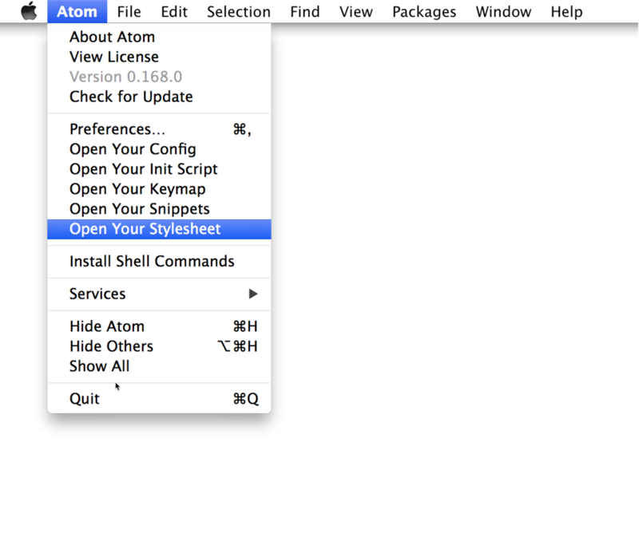
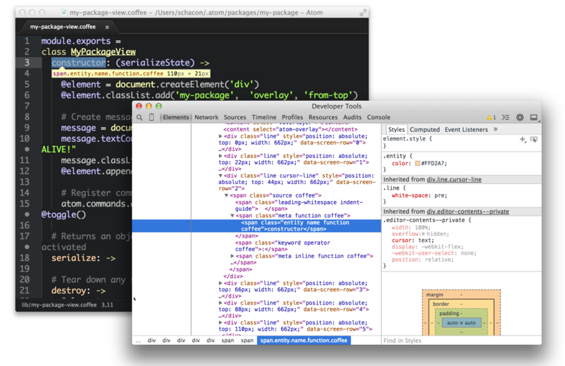
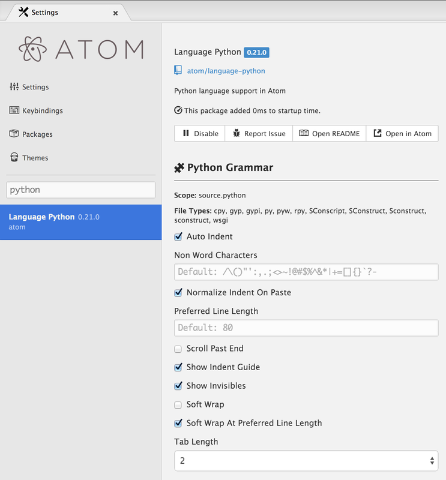
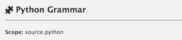

基本的自定义#
在我们感受到Atom中所有东西的便利之后，让我们看看如何改进它。可能有一些快捷键你经常使用但是感觉很别扭，或者一些颜色不是十分适合你。Atom具有惊人的灵活性，所以让我们对它做一些力所能及的简单调整。
使用CSON来配置#
所有Atom的配置文件（除了你的样式表和初始脚本）全部用CSON编写，全称是CoffeeScript Object Notation。就像JSON（JavaScript Object Notation）的名字一样，CSON是一个储存结构化数据的文本格式，表现为由键值对组成的简单对象的形式。
key: key: value key: value key: [value, value]
对象是CSON的基石，由缩进（像上面的文件那样）或者花括号（{}）描述。一个键的值可以是字符串、数字、对象、布尔值、null或者上述数据类型的一个数组。
不像CSS的选择器，CSON的键在每个对象中只能重复一次。如果存在重复的键，最后一次出现的那个会覆盖其他所有同名的键。在Atom配置文件中也是如此。
避免这种情况：
# DON'T DO THIS
'.source.js':
'console.log':
'prefix': 'log'
'body': 'console.log(${1:"crash"});$2'
# Only this snippet will be loaded
'.source.js':
'console.error':
'prefix': 'error'
'body': 'console.error(${1:"crash"});$2'
而是要写成这样：
# DO THIS: Both of these will be loaded
'.source.js':
'console.log':
'prefix': 'log'
'body': 'console.log(${1:"crash"});$2'
'console.error':
'prefix': 'error'
'body': 'console.error(${1:"crash"});$2'
样式调整#
如果你只是对个人样式做一些应急的修改，而不打算发布整个主题，你可以在你的~/.atom目录的styles.less文件中添加样式。
你可以在编辑器中从Atom > Open Your Stylesheet菜单打开这个文件。

例如，要修改光标的颜色，你可以将一下规则添加到你的~/.atom/styles.less文件中：
atom-text-editor::shadow .cursor { border-color: pink; }
了解都有哪些class可用的最简单方式，是通过开发者工具手动查看DOM。我们将在下一章详细介绍这个工具，现在先简单来看一下。
你可以通过按下alt-cmd-I来打开开发者工具，然后会弹出一个Chrome开发者工具面板。

你可以轻易查看到当前编辑器的所有元素。如果你想更新一些东西的样式，你需要先知道它拥有哪个class，然后再你的样式文件中添加一条Less规则。
如果你不熟悉Less，它是一个让CSS变得更简单的CSS预处理器，你可以访问lesscss.org来了解关于它的更多信息。如果你更愿意使用CSS，这个文件也可以命名为styles.css来包含CSS。
自定义快捷键#
Atom从你~/.atom目录中的config.cson文件中加载配置，它含有CoffeeScript格式的JSON，也就是CSON：
'core': 'excludeVcsIgnoredPaths': true 'editor': 'fontSize': 18
配置本身以包名分组，或者一两个核心的命名空间，比如core和editor。
你可以从Atom > Open Your Config菜单在编辑器中打开它。
快捷键配置参考#
coredisabledPackages：被禁用的包名的一个列表excludeVcsIgnoredPaths：不要加载.gitignore指定的文件ignoredNames：在Atom中要忽略的文件名projectHome：假定项目被存放的目录-
themes：要加载的主题名称的数组，按照层叠顺序 -
editor autoIndent：开启或关闭基本的自动缩进（默认为true）nonWordCharacters：一个非单词字符的字符串，来指定单词边界fontSize：编辑器中的字体大小fontFamily: 编辑器中的字体类型invisibles: 一个Atom用来渲染空白字符的哈希表。键是空白字符的类型，值是被渲染成的字符（使用false来屏蔽单个的空白字符）tab：硬tab字符cr：回车（Carriage return，微软风格的行末尾）eol：字符\n`space：在开头或末尾的空格字符
preferredLineLength：设定一行的长度（默认为80）showInvisibles：是否将不可见字符渲染为占位符（默认为false）showIndentGuide：是否在编辑器中显示缩进标识showLineNumbers：显示或者隐藏行号softWrap：开启或关闭编辑器中的软换行softWrapAtPreferredLineLength: 开启或关闭在preferredLineLength处软换行tabLength：tab字符所占空格字符的宽度（默认为2）fuzzyFinderignoredNames：只在模糊查找中忽略的文件名whitespaceensureSingleTrailingNewline：是否将文件末尾的多个换行减少为一个removeTrailingWhitespace：开启或关闭清除行尾的空白字符（默认为true）wrap-guidecolumns：带有pattern和column键的数组，用来将当前编辑器的目录匹配到列中的位置
语言特定配置#
你也可以为不同的文件类型设置几种不同的配置。例如，你可能希望Atom在Markdown文件中软换行，在ruby文件中将tab显示为两个空格的宽度，在python文件中显示为4个空格的宽度。
下面是作用于语言的几种选项，这是它们的列表：
editor.tabLength editor.softWrap editor.softWrapAtPreferredLineLength editor.preferredLineLength editor.scrollPastEnd editor.showInvisibles editor.showIndentGuide editor.nonWordCharacters editor.invisibles editor.autoIndent editor.normalizeIndentOnPaste
设置视图中的语言特定配置#
你可以在设置视图中的每个语言的包中，编辑这些配置。只要在左边的面板搜索你选择的语言，选择它，并且编辑它就好了。

配置文件中的语言特定配置#
你也可以直接编辑实际的配置文件。通过在命令面板中输入“open config”并按下回车来打开配置文件。
全局设置在global键的下面。每种语言都有他们自己的顶级键，这个键就是这种语言的作用域。语言特定的设置会覆盖全局域的任何设置。
'global': # all languages unless overridden
'editor':
'softWrap': false
'tabLength': 8
'.source.gfm': # markdown overrides
'editor':
'softWrap': true
'.source.ruby': # ruby overrides
'editor':
'tabLength': 2
'.source.python': # python overrides
'editor':
'tabLength': 4
查找语言作用域的名字#
为了有效地编写这种覆盖的设置，你需要知道语言的作用域名称。我们已经在“代码段格式”一节中，为了编写代码段而做过一遍了，现在我们简单地重复一下。
作于域的名称显示在设置视图中的每个语言的包中。在左边的面板中寻找你选择的语言，选择它，然后你会在语言名称的标题下面看到作用域名称：
